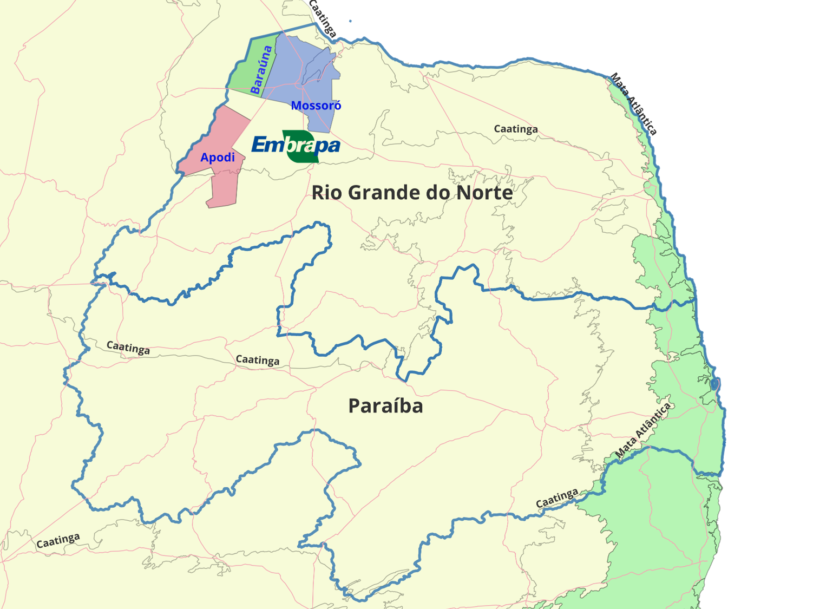

1
Sumário Executivo
Para decisão
Recomendação ao Board: Aprovar a constituição da UMIPI sediada na UFERSA (Mossoró/RN), sob liderança compartilhada das Embrapas Mandioca e Fruticultura e Agroindústria Tropical, como instrumento de baixo custo de capital e alto retorno socioeconômico para converter as vantagens comparativas naturais do semiárido em vantagem competitiva sustentável baseada em conhecimento.
Esta Nota Técnica avalia, em chave gerencial e decisória, a viabilidade e o impacto estratégico da implantação de uma Unidade Mista de Pesquisa e Inovação (UMIPI) no Rio Grande do Norte, com transbordamento para a Paraíba. A análise apoia-se nos microdados municipais do IBGE (produção agrícola, pecuária, aquícola e extrativista), nos panoramas socioeconômicos do IBGE Cidades@, no modelo do Diamante de Porter, na Inteligência Territorial Estratégica (ITE) da Embrapa e na Norma de UMIPIs da Embrapa (DD nº 11/2021).
505 mil tMelão RN — líder nacional
31,6 mi kgCamarão RN — maior do país
7,2 mi tCana PB
BaixaExposição financeira
O território configura um cluster agroindustrial de relevância nacional. O Rio Grande do Norte é líder nacional na exportação de melão (≈18,9 mil ha colhidos e 505 mil t), potência em melancia (142,6 mil t), castanha de caju (62,1 mil ha) e banana (214,5 mil t), além da maior carcinicultura do país (31,6 milhões de kg de camarão). A Paraíba complementa o arranjo com forte base em cana-de-açúcar (7,2 milhões de t), abacaxi (300,9 mil t), banana, mandioca e tilapicultura (4,2 milhões de kg).
O recorte Apodi–Mossoró–Baraúna sintetiza o núcleo dinâmico do oeste potiguar: a Chapada do Apodi e seus perímetros irrigados sustentam fruticultura de exportação e a maior concentração estadual de castanha de caju; Mossoró articula petróleo, sal, fruticultura irrigada de classe mundial (Agrícola Famosa) e carcinicultura; e Baraúna firma-se como polo de melão e melancia de alta produtividade. O cluster dispõe de infraestrutura logística, base científica robusta (UFERSA, UFRN, UFCG, UFPB), empresas-âncora exportadoras e instituições estaduais (EMPARN, EMATER-RN).
A aplicação do Diamante de Porter evidencia um diamante "completo" e auto-reforçado na fruticultura irrigada — condições de fatores favoráveis (clima, solos, água de perímetros), demanda externa sofisticada (Europa, EUA, Oriente Médio com exigência de certificação), indústrias de apoio e rivalidade empresarial intensa. Persistem fragilidades estruturais — déficit hídrico, baixa escolaridade, informalidade, saneamento precário e vulnerabilidade da agricultura familiar — que delimitam o espaço de atuação da UMIPI.
Sob a ITE da Embrapa (quadros natural, agrário, agrícola, infraestrutura e socioeconômico), a UMIPI deve operar como observatório territorial e nó integrador de dados e tecnologias, traduzindo a vocação produtiva em soluções de manejo, sanidade, eficiência hídrica, agregação de valor e inclusão produtiva. O modelo de governança proposto observa estritamente a Norma DD nº 11: aliança estratégica sem personalidade jurídica, formalizada por Acordo de Parceria, com Comitê Gestor e Comitê Técnico, Unidade líder da Embrapa e coordenação corporativa da DEPD.
Os investimentos diretos da Embrapa são marginais — a Norma veda transferência de recursos entre parceiros e prevê compartilhamento de infraestrutura instalada (UFERSA), captação via editais e fundações de apoio. A relação custo-benefício é, portanto, altamente favorável.
Aderência estratégica
Alta — conecta fruticultura tropical, mandioca/banana, caprinovinocultura, carcinicultura e bioeconomia da Caatinga à missão das Unidades líderes.
Exposição financeira
Baixa — sem aporte orçamentário entre parceiros; uso de infraestrutura da UFERSA e captação por editais (FNE, Finep, CNPq).
Impacto socioeconômico
Elevado — competitividade exportadora + inclusão da agricultura familiar e resiliência hídrica/climática.
Risco principal
Hídrico e climático, mitigável por agenda de PD&I em irrigação de precisão e reúso.
Conclusão. A UMIPI apresenta elevada aderência estratégica, exposição financeira reduzida e alto potencial de retorno social. Recomenda-se ao Board autorizar a proposição formal à DEPD nos termos da Norma, a indicação da Unidade líder, a celebração do Acordo de Parceria multinível e a definição de uma carteira inicial de 5–7 projetos âncora com metas mensuráveis de produtividade, renda e sustentabilidade para o quadriênio.
2
Contexto Territorial — RN & PB
Diagnóstico
3,30 miPopulação RN (2022)
3,97 miPopulação PB (2022)
167Municípios RN
223Municípios PB
0,728IDH RN (2021)
0,698IDH PB (2021)
Os dois estados compartilham o bioma Caatinga, clima semiárido e desafios estruturais comuns — rendimento domiciliar per capita modesto (R$ 1.819 no RN; R$ 1.543 na PB), elevada informalidade e dependência de transferências. Ao mesmo tempo, ostentam ilhas de competitividade agroindustrial de relevância nacional, com perfis complementares: o RN combina o agro de exportação do oeste potiguar (fruticultura irrigada) e a faixa litorânea (cana, coco, carcinicultura); a PB destaca-se na Zona da Mata (cana, abacaxi), no Brejo (banana, café) e no Cariri/Sertão (caprinovinocultura).
Racional do arranjo bi-estadual. A complementaridade produtiva — fruticultura/carcinicultura no RN e cana/abacaxi/caprinovinocultura no semiárido paraibano — permite que a UMIPI gere transbordamentos tecnológicos para microrregiões contíguas da PB (Sertão, Cariri, Curimataú), ampliando escala, escopo e retorno social dos investimentos em PD&I.
3
Dimensão Agrícola
Vocação3.1 Panorama estadual
| Cultura | RN — Área (ha) | RN — Produção (t) | PB — Área (ha) | PB — Produção (t) |
|---|
| Melão | 18.930 | 505.212 | 24 | 440 |
| Melancia | 6.762 | 142.614 | 279 | 5.509 |
| Castanha de caju | 62.128 | 20.546 | 2.085 | 488 |
| Banana (cacho) | 8.383 | 214.472 | 10.812 | 145.055 |
| Mandioca | 24.832 | 276.245 | 16.121 | 164.972 |
| Cana-de-açúcar | 64.398 | 3.858.316 | 110.961 | 7.181.745 |
| Abacaxi* | 2.517 | 64.729 | 9.419 | 300.903 |
| Feijão (grão) | 34.952 | 13.701 | 78.451 | 19.119 |
| Milho (grão) | 46.837 | 22.696 | 96.179 | 47.842 |
| Coco-da-baía* | 18.289 | 164.555 | 7.172 | 83.532 |
Fonte: IBGE — PAM (Agrícola RN/PB). *Abacaxi e coco em mil frutos.
Leitura competitiva. RN hegemônico em melãomelanciacastanha de caju (cadeias tecnificadas e exportadoras). PB líder em canaabacaxi com forte base de banana e mandioca (mercado interno e agroindústria). Essa complementaridade é o alicerce da agenda integrada de PD&I.
3.2 Destaques municipais — Núcleo Apodi / Mossoró / Baraúna (área colhida, ha)
| Município | Castanha caju | Melão | Melancia | Banana | Feijão | Mandioca |
|---|
| Apodi | 11.000 | 2.000 | 865 | 500 | 250 | 15 |
| Mossoró | 1.850 | 8.300 | 2.500 | 15 | 3.200 | 50 |
| Baraúna | 200 | 3.100 | 350 | 400 | 300 | 80 |
Fonte: IBGE — Agrícola Cidades RN.
Os três municípios concentram o cinturão da fruticultura irrigada de exportação do RN, com produtividade de melão superior a 30 t/ha em sistemas tecnificados — patamar de classe mundial. Apodi combina a maior área de castanha de caju do recorte com fruticultura emergente nos perímetros irrigados (Santa Cruz do Apodi).
3.3 Principais municípios produtores — além do núcleo
Para além de Apodi, Mossoró e Baraúna, a produção agrícola distribui-se por importantes polos no litoral e no agreste, conforme os microdados municipais do IBGE (quantidade produzida, 2024).
Leitura gerencial. O melão concentra-se em Mossoró, Baraúna, Tibau e Apodi (cinturão de exportação); a cana domina o litoral sul (Canguaretama, Baía Formosa, Arês); a bananicultura firma-se no Vale do Açu (Alto do Rodrigues, Ipanguaçu) e a mandioca no litoral leste (Vera Cruz, Pureza, Touros).
Rio Grande do Norte — maiores produtores por cultura (t)
| Cultura | Maior produtor | Produção | Demais municípios de destaque |
|---|
| Melão | Mossoró | 218.373 | Baraúna (93.000) · Tibau (75.645) · Apodi (61.502) |
| Melancia | Mossoró | 70.000 | Apodi (21.654) · Upanema (14.360) · Baraúna (10.280) |
| Cana-de-açúcar | Canguaretama | 892.480 | Baía Formosa (660.000) · Arês (463.382) · Goianinha (388.719) |
| Banana | Alto do Rodrigues | 40.960 | Rio do Fogo (25.650) · Ipanguaçu (25.615) · Ceará-Mirim (23.000) |
| Mandioca | Vera Cruz | 51.200 | Pureza (28.024) · Touros (26.744) · Macaíba (20.400) |
| Castanha de caju | Serra do Mel | 7.000 | Apodi (3.300) · Severiano Melo (1.928) · Cerro Corá (1.500) |
Fonte: IBGE — PAM / Agrícola Cidades RN (quantidade produzida, t; castanha de caju em t).
Paraíba — maiores produtores por cultura (t)
| Cultura | Maior produtor | Produção | Demais municípios de destaque |
|---|
| Cana-de-açúcar | Pedras de Fogo | 1.144.000 | Santa Rita (955.500) · Sapé (663.000) · Rio Tinto (637.000) |
| Abacaxi* | Pedras de Fogo | 68.400 | Itapororoca (60.000) · Araçagi (48.000) · Santa Rita (31.500) |
| Banana | Pilões | 23.100 | Bananeiras (21.000) · Alagoa Nova (21.000) · Areia (10.800) |
| Mandioca | Mari | 21.200 | Pitimbu (16.014) · Pedras de Fogo (12.600) · Alhandra (7.320) |
| Coco-da-baía* | Lucena | 21.422 | Santa Rita (18.200) · Pitimbu (10.600) · Mamanguape (6.480) |
| Milho | Araruna | 2.400 | Sousa (2.352) · Itatuba (1.600) · Tacima (1.500) |
Fonte: IBGE — PAM / Agrícola Cidades PB. *Abacaxi e coco em mil frutos.
4
Dimensão Pecuária
Inclusão & escala
1,38 miBovinos RN
669 milCaprinos RN
792 milOvinos RN
12,7 miGalináceos RN
849 milCaprinos PB
842 milOvinos PB
A caprinovinocultura é traço identitário do semiárido, com forte vocação para inclusão social e resiliência à seca, justificando articulação direta com a Embrapa Caprinos e Ovinos. A avicultura industrial é expressiva (12,7 mi de galináceos no RN; 14,5 mi na PB).
| Município | Bovino | Caprino | Ovino | Suíno (total) | Galináceos |
|---|
| Mossoró | 24.000 | 34.500 | 18.000 | 22.500 | 2.000.000 |
| Apodi | 23.000 | 50.500 | 42.000 | 13.000 | 190.000 |
| Baraúna | 7.020 | 8.930 | 3.300 | 4.900 | 25.800 |
Fonte: IBGE — PPM (Pecuária Cidades RN).
Apodi lidera o rebanho caprino e ovino do recorte (50,5 mil e 42 mil cabeças); Mossoró concentra avicultura industrial relevante. A pecuária regional demanda PD&I em forragicultura adaptada, sanidade, melhoramento genético e cadeias de leite e carne caprina/ovina.
4.1 Principais municípios criadores — além do núcleo
O efetivo dos rebanhos extrapola amplamente o núcleo Apodi/Mossoró/Baraúna, com forte presença no Seridó, no Oeste e no Cariri paraibano (IBGE — PPM, cabeças, 2024).
Leitura gerencial. A caprinovinocultura tem seus maiores plantéis em Apodi e Açu (RN) e em Monteiro e Sumé (Cariri/PB); a avicultura industrial concentra-se em Santa Cruz e Mossoró (RN) e em Pocinhos, Pedras de Fogo e Guarabira (PB).
Rio Grande do Norte — maiores rebanhos (cabeças)
| Rebanho | Maior criador | Efetivo | Demais municípios de destaque |
|---|
| Bovino | Caicó | 48.922 | Santana do Matos (33.000) · Nova Cruz (33.000) · Santo Antônio (32.700) |
| Caprino | Apodi | 50.500 | Santana do Matos (50.000) · Pedro Avelino (34.850) · Mossoró (34.500) |
| Ovino | Açu | 54.571 | Campo Grande (42.005) · Apodi (42.000) · Santana do Matos (40.000) |
| Galináceos | Santa Cruz | 2.340.000 | Mossoró (2.000.000) · Macaíba (1.200.000) · São José de Mipibu (1.082.671) |
Fonte: IBGE — PPM / Pecuária Cidades RN (efetivo, cabeças).
Paraíba — maiores rebanhos (cabeças)
| Rebanho | Maior criador | Efetivo | Demais municípios de destaque |
|---|
| Bovino | Pombal | 29.280 | Sousa (26.887) · Paulista (25.742) · Piancó (20.703) |
| Caprino | Monteiro | 40.123 | Sumé (31.636) · São João do Tigre (30.405) · Serra Branca (30.079) |
| Ovino | Sumé | 32.310 | Monteiro (29.654) · Barra de São Miguel (25.000) · Barra de Santa Rosa (25.000) |
| Galináceos | Pocinhos | 1.250.000 | Pedras de Fogo (1.132.509) · Guarabira (1.120.000) · Mamanguape (936.878) |
Fonte: IBGE — PPM / Pecuária Cidades PB (efetivo, cabeças).
5
Dimensão Aquícola
Liderança nacionalRN — Potência nacional em carcinicultura. Produção estadual de 31,62 milhões de kg de camarão, 2,30 milhões de kg de tilápia e 10,73 milhões de milheiros de larvas/pós-larvas. PB com perfil voltado à tilapicultura (4,25 milhões de kg) e carcinicultura (8,87 milhões de kg).
| Produto | RN | PB |
|---|
| Camarão (kg) | 31.620.945 | 8.869.300 |
| Tilápia (kg) | 2.297.962 | 4.249.395 |
| Larvas/pós-larvas de camarão (milheiros) | 10.730.818 | 185.400 |
| Ostras, vieiras e mexilhões (kg) | 125.000 | 23.000 |
| Tambaqui / Curimatã (kg) | 221.670 / 204.554 | 12.856 / 300 |
Fonte: IBGE — Produção da Aquicultura (RN/PB).
Municípios estuarinos do RN (Pendências, Canguaretama, Arês, Guamaré, Macau, Mossoró) lideram a carcinicultura; em Mossoró, 2,2 milhões de kg. Na PB, destacam-se Mari, São Miguel de Taipu, Mogeiro e Itatuba na tilapicultura. Demanda-se PD&I em sanidade aquícola, genética, nutrição e sistemas de bioflocos com menor pegada hídrica e ambiental.
5.1 Principais municípios produtores — além do núcleo
A carcinicultura concentra-se nos estuários do litoral e do Vale do Açu; a tilapicultura, em açudes e barragens do interior (IBGE — Produção da Aquicultura, kg, 2024).
Leitura gerencial. Pendências responde sozinha por 9,6 milhões de kg de camarão no RN; na PB, João Pessoa e São Miguel de Taipu lideram a carcinicultura, enquanto a tilápia tem em Mari (PB) e Nísia Floresta (RN) seus maiores polos.
Rio Grande do Norte — maiores produtores (kg)
| Produto | Maior produtor | Produção | Demais municípios de destaque |
|---|
| Camarão | Pendências | 9.608.000 | Arês (3.500.000) · Canguaretama (3.200.000) · Sen. Georgino Avelino (2.800.000) · Guamaré (2.299.122) |
| Tilápia | Nísia Floresta | 800.000 | Lagoa de Pedras (295.000) · Sen. Georgino Avelino (230.000) · Canguaretama (125.000) |
Fonte: IBGE — Aquicultura Cidades RN (produção, kg).
Paraíba — maiores produtores (kg)
| Produto | Maior produtor | Produção | Demais municípios de destaque |
|---|
| Camarão | João Pessoa | 1.800.000 | S. Miguel de Taipu (1.000.000) · Santa Rita (980.000) · Mogeiro (880.000) |
| Tilápia | Mari | 1.000.000 | Bananeiras (825.000) · Riachão do Poço (398.750) · Mamanguape (350.000) |
Fonte: IBGE — Aquicultura Cidades PB (produção, kg).
6
Dimensão Extrativista
Bioeconomia
| Produto | RN | PB |
|---|
| Alimentícios — total (t) | 1.436 | 4.012 |
| Umbu / Mangaba (t) | 692 / 641 | 2.302 / 914 |
| Castanha-de-caju extrativa (t) | 65 | 310 |
| Carnaúba — pó (t) | 420 | 15 |
| Carvão vegetal (t) | 3.334 | 984 |
| Lenha (m³) | 1.124.485 | 713.824 |
Fonte: IBGE — PEVS (Extrativismo RN/PB).
Ativos da sociobiodiversidade da Caatinga — umbu, mangaba, carnaúba e caju — com potencial de agregação de valor (polpas, óleos, ceras, cosméticos) e inclusão da agricultura familiar. A carnaúba é relevante no RN (Açu, Apodi, Ipanguaçu, Felipe Guerra). A energia de biomassa revela pressão sobre a vegetação nativa, demandando manejo florestal sustentável.
6.1 Principais municípios produtores — além do núcleo
O extrativismo vegetal mapeia a sociobiodiversidade da Caatinga e do litoral (IBGE — PEVS, 2024).
Leitura gerencial. O umbu destaca-se no Seridó paraibano (Juazeirinho, São Vicente do Seridó); a mangaba no litoral (Nísia Floresta/RN, Rio Tinto/PB); a carnaúba no Vale do Açu (Ipanguaçu, Apodi); e a lenha pressiona o oeste potiguar (Caraúbas, Alexandria).
Rio Grande do Norte — maiores produtores
| Produto | Maior produtor | Produção | Demais municípios de destaque |
|---|
| Umbu (t) | São Miguel do Gostoso | 185 | Pedra Grande (100) · São Bento do Norte (74) · Caiçara do Norte (58) |
| Mangaba (t) | Nísia Floresta | 526 | Pureza (52) · Ceará-Mirim (36) · Maxaranguape (11) |
| Carnaúba — pó (t) | Ipanguaçu | 88 | Apodi (80) · Upanema (60) · Açu (57) |
| Lenha (m³) | Caraúbas | 230.000 | Alexandria (114.000) · Santa Cruz (104.020) · Guamaré (52.000) |
Fonte: IBGE — PEVS / Extrativismo Cidades RN.
Paraíba — maiores produtores
| Produto | Maior produtor | Produção | Demais municípios de destaque |
|---|
| Umbu (t) | Juazeirinho | 450 | São Vicente do Seridó (422) · Olivedos (350) · Taperoá (182) |
| Mangaba (t) | Rio Tinto | 305 | Baía da Traição (285) · Marcação (180) · Conde (120) |
| Lenha (m³) | São Domingos do Cariri | 31.010 | Olho d'Água (25.999) · Juazeirinho (25.000) · Taperoá (19.450) |
| Carvão vegetal (t) | Emas | 61 | Picuí (50) · Coxixola (29) · Cuité (28) |
Fonte: IBGE — PEVS / Extrativismo Cidades PB.
7
Análise Competitiva — Diamante de Porter
EstratégiaO modelo de Michael Porter (The Competitive Advantage of Nations, HBR, 1990) explica a sustentação de vantagem competitiva em clusters territoriais a partir de quatro determinantes inter-relacionados, somados ao papel do Governo e do Acaso.
① Condições de Fatores
- Naturais: alta luminosidade e baixa umidade (favoráveis ao °Brix do melão/melancia), solos da Chapada do Apodi e água dos perímetros irrigados.
- Avançados: UFERSA, UFRN, IFRN, EMPARN; mão de obra com expertise em fruticultura irrigada.
- Restrição-chave: escassez hídrica e baixa escolaridade média.
② Condições de Demanda
- Demanda externa sofisticada (Europa, EUA, Canadá, Oriente Médio) com exigência de certificação e rastreabilidade.
- Pressão por qualidade eleva o padrão tecnológico de todo o cluster.
- Demanda interna crescente por proteína caprina/ovina e pescado.
③ Indústrias Correlatas e de Apoio
- Logística refrigerada, embalagens, insumos e irrigação por gotejamento; packing houses.
- Lacuna: agregação de valor (processamento) e P&D local ainda incipientes — espaço natural da UMIPI.
④ Estratégia, Estrutura e Rivalidade
- Coexistência de players exportadores (Agrícola Famosa, Favorita, Crop Agrícola) e ampla agricultura familiar.
- Rivalidade saudável impulsiona produtividade e inovação.
- Risco: dualidade competitiva — concentração x exclusão da pequena produção.
Governo & Acaso. Políticas de irrigação (DNOCS), crédito (FNE/BNB, Pronaf), defesa agropecuária (MAPA) e ATER (EMATER-RN) moldam o ambiente competitivo. Choques climáticos (secas, El Niño) e sanitários (mancha-aquosa; vírus em camarão) reforçam a necessidade de PD&I territorial permanente.
Conclusão Porter. O diamante é "completo" e auto-reforçado na fruticultura irrigada, com vantagem competitiva de base nacional/global. A UMIPI atua nos elos mais frágeis — fatores avançados (P&D, qualificação), indústrias de apoio (agregação de valor) e inclusão da pequena produção —, convertendo vantagem comparativa (natureza) em vantagem competitiva (conhecimento).
Referências: Porter (1990), HBR; "Diamante de Porter" (Wikipédia); estudos UFERSA sobre competitividade no RN.
8
Inteligência Territorial Estratégica (ITE – Embrapa)
MétodoA ITE integra big data, mapas e indicadores em cinco dimensões para subsidiar planejamento, políticas públicas e tomada de decisão no agronegócio. Aplicação ao território RN/PB:
| Dimensão ITE | Diagnóstico do território | Aplicação pela UMIPI |
|---|
| Quadro Natural | Caatinga; semiárido; alta insolação; déficit hídrico; solos da chapada e aluviões; Sistema Costeiro-Marinho (Mossoró pertence). | Zoneamento agroclimático, monitoramento de água/solo, agricultura de precisão, adaptação climática. |
| Quadro Agrário | Dualidade empresas exportadoras × agricultura familiar/assentamentos; perímetros irrigados públicos. | Inteligência fundiária, inclusão produtiva, regularização/CAR, modelos de cooperação. |
| Quadro Agrícola | Cadeias âncora: melão, melancia, banana, caju, mandioca, cana, abacaxi; caprinovinocultura; carcinicultura. | Aptidão, produtividade, sanidade, melhoramento e transferência de tecnologia por cadeia. |
| Infraestrutura | Rodovias (BR-304/405/110), perímetros irrigados, packing houses; gargalos em armazenagem e energia rural. | Mapeamento logístico, eficiência energética, irrigação inteligente, silos. |
| Socioeconômico | IDH 0,72 (RN) / 0,70 (PB); renda modesta; informalidade; baixa cobertura de esgoto. | Painéis de renda/emprego e ITE para priorização de políticas e investimentos. |
A UMIPI deve operar como observatório territorial (à semelhança do Centro de Inteligência e Mercado da Embrapa Caprinos e Ovinos), gerando dashboards, cenários e recomendações georreferenciadas que orientem produtores, ATER e gestores públicos do RN e da PB.
9
Atuação da UMIPI e Unidades da Embrapa
PropostaConforme a Norma da Embrapa (DD nº 11/2021), a UMIPI é uma aliança estratégica sem personalidade jurídica, formalizada por Acordo de Parceria, voltada ao atendimento de necessidades regionais/territoriais e à resolução de desafios de PD&I específicos e temporários, mediante compartilhamento de infraestrutura, competências e captação de recursos — sem transferência orçamentária entre parceiros.
9.1 Liderança compartilhada
Embrapa Mandioca e Fruticultura (Cruz das Almas/BA)
Líder em PD&I de mandioca, banana e abacaxi — fortes em Apodi (mandioca/banana) e na PB (abacaxi, banana, mandioca). Aporta germoplasma, manejo e material propagativo.
Embrapa Agroindústria Tropical (Fortaleza/CE)
Referência em fruticultura tropical e processamento (melão, melancia, caju, maracujá) — aderente ao núcleo exportador Mossoró/Baraúna/Apodi. Aporta agregação de valor e qualidade pós-colheita.
9.2 Unidades da Embrapa potencialmente partícipes
| Unidade | Aderência à produção regional |
|---|
| Embrapa Semiárido (Petrolina/PE) | Fruticultura irrigada, manejo de água, convivência com a seca — núcleo técnico do semiárido. |
| Embrapa Caprinos e Ovinos (Sobral/CE) | Caprinovinocultura (Apodi, Cariri/Sertão PB); modelo de Centro de Inteligência e Mercado (ITE). |
| Embrapa Agroindústria Tropical (CE) | Melão, melancia, caju, processamento e pós-colheita (co-líder). |
| Embrapa Mandioca e Fruticultura (BA) | Mandioca, banana, abacaxi (co-líder). |
| Embrapa Solos (UEP Recife) | Levantamento e manejo de solos da chapada e aluviões; aptidão agrícola. |
| Embrapa Meio Ambiente | Sustentabilidade de perímetros irrigados, água, resíduos, carbono. |
| Embrapa Hortaliças | Olericultura irrigada (tomate, cebola) no Cariri/Curimataú. |
| Embrapa Algodão (Campina Grande/PB) | Algodão, sisal, gergelim — ponte natural com a PB. |
| Embrapa Pesca e Aquicultura | Carcinicultura e tilapicultura (sanidade, genética, bioflocos). |
| Embrapa Agroenergia / Agrobiologia | Biomassa, fixação biológica de nitrogênio, bioinsumos. |
9.3 Carteira inicial de PD&I (eixos)
- Fruticultura tropical irrigada competitiva e sustentável — produtividade, qualidade, sanidade, uso eficiente da água, certificação.
- Resiliência hídrica e climática — reúso, dessalinização, irrigação de precisão, sensoriamento remoto.
- Caprinovinocultura e forragicultura — genética, nutrição com plantas da Caatinga, sanidade, cadeias de leite/carne.
- Mandiocultura e bananicultura — variedades, manejo, processamento, inclusão familiar.
- Carcinicultura/tilapicultura sustentável — biossegurança, bioflocos, redução de impacto estuarino.
- Sociobiodiversidade da Caatinga — umbu, mangaba, carnaúba, caju: bioeconomia e agregação de valor.
- Inteligência Territorial Estratégica — observatório de dados e apoio a políticas.
9.4 Principais desafios
- Conciliar a agenda do agro exportador de alta tecnologia com a inclusão da agricultura familiar.
- Assegurar captação estável de recursos via editais e fundações de apoio (Norma veda aporte direto entre parceiros).
- Superar gargalos hídricos e atrair/reter capital humano qualificado no interior.
- Traduzir ciência em adoção efetiva no campo, via ATER (EMATER-RN / EMATER-PB / EMPAER).
10
SWOT, Riscos, Oportunidades e Desafios
RiscoAnálise crítica da UMIPI sediada na UFERSA/Mossoró, sob liderança compartilhada Embrapa Mandioca e Fruticultura + Embrapa Agroindústria Tropical.
Forças
- Sede na UFERSA — universidade especializada no semiárido.
- Localização no maior polo de melão/melancia do Brasil.
- Liderança Embrapa de excelência em fruticultura tropical e mandioca/banana.
- Ecossistema exportador maduro (Famosa, Favorita, Crop).
- Base de dados robusta (IBGE) e ITE aplicável.
Fraquezas
- Liderança Embrapa sediada fora do RN (BA e CE) — distância gerencial.
- Déficit hídrico estrutural e dependência de perímetros irrigados.
- Baixa escolaridade média e informalidade da mão de obra.
- Saneamento e armazenagem deficientes.
- Fragilidade financeira de parte da agricultura familiar.
Oportunidades
- Demanda global por frutas tropicais certificadas.
- Bioeconomia da Caatinga (umbu, mangaba, carnaúba, caju).
- Expansão da caprinovinocultura e do pescado nacional.
- Recursos de FNE/BNB, MAPA, MDA, Finep/CNPq.
- Transbordamento para a Paraíba (Sertão, Cariri, Brejo).
Ameaças
- Eventos climáticos extremos (secas, El Niño).
- Crises sanitárias (vírus em camarão, pragas em fruteiras).
- Barreiras fitossanitárias e câmbio nas exportações.
- Concorrência de outros polos (Vale do São Francisco, CE).
- Descontinuidade político-orçamentária.
Matriz de Riscos × Mitigação
| Risco | Prob. | Impacto | Mitigação |
|---|
| Escassez hídrica | Alta | Alto | PD&I em irrigação de precisão, reúso e dessalinização. |
| Distância da liderança (BA/CE) | Média | Médio | Coordenação executiva local na UFERSA; reuniões periódicas com a DEPD; metas claras. |
| Crise sanitária (camarão/fruteiras) | Média | Alto | Vigilância, biossegurança e parceria com defesa agropecuária. |
| Descontinuidade orçamentária | Média | Alto | Diversificação de fontes (FNE, Finep, privado, Sistema S, fundação de apoio). |
| Baixa adoção pela agric. familiar | Média | Médio | ATER intensiva, unidades demonstrativas e dias de campo. |
11
Modelo de Parcerias Multinível
RedeOs parceiros devem ter representação local/regional/estadual no escopo da UMIPI, atuação direta no setor agropecuário/agroindustrial e reconhecida atuação técnica — requisitos da Norma DD nº 11 (seção 7.3).
| Nível | Instituições | Papel |
|---|
| Federal | MAPA, MDA, Min. da Pesca e Aquicultura, DNOCS, Finep, CNPq, BNB (FNE) | Financiamento, política agrícola, defesa, infraestrutura hídrica, crédito. |
| Estadual | EMPARN, EMATER-RN, SAPE/RN, UFERSA, EMPAER-PB, EMATER-PB, Governos RN/PB | Pesquisa adaptativa, ATER, difusão tecnológica, articulação territorial. |
| Privado | Agrícola Famosa, Favorita, Crop Agrícola, cooperativas, carcinicultores | Co-financiamento, campos experimentais, escala, validação de mercado. |
| Ensino e Pesquisa | UFERSA, UFRN, UFPB, UFCG, IFRN, IFPB | Pós-graduação, laboratórios, formação de pesquisadores. |
| Sistema S | SEBRAE, SENAR, SENAI | Capacitação, gestão rural, empreendedorismo, qualificação. |
| ONGs / Sociedade civil | Associações de produtores, ASA | Inclusão produtiva, tecnologias sociais de convivência com o semiárido. |
| Startups (AgTechs) | Ecossistema de inovação | Soluções digitais, sensoriamento, rastreabilidade, mercados. |
| Produtores rurais | Familiares e empresariais | Beneficiários e co-criadores; unidades de referência e validação. |
12
Governança e Modelo Operacional
Conforme Norma DD nº 11Princípio normativo. A UMIPI não é unidade organizacional da Embrapa nem possui personalidade jurídica. É formalizada por Acordo de Parceria e gerida por Comitê Gestor apoiado por Comitê Técnico, com Unidade líder da Embrapa e coordenação corporativa da DEPD (Diretoria de Pesquisa e Desenvolvimento). Não há transferência de recursos orçamentários entre parceiros.
12.1 Estrutura de governança (aderente à Norma)
| Instância | Composição | Atribuições |
|---|
| Diretoria-Executiva (DE) | Embrapa | Delibera sobre criação, continuidade, encerramento ou rescisão; ato decisório publicado em BCA. |
| DEPD (Diretoria de Pesquisa e Desenvolvimento) | Embrapa | Análise de admissibilidade técnica/finalística, parecer de recomendação, indicação da Unidade líder, gestão corporativa e monitoramento por indicadores. |
| Unidade Líder | UD da Embrapa (co-liderança Mandioca e Fruticultura / Agroindústria Tropical) | Instrução processual, negociação, Acordo de Parceria, registro no SAIC, regimento (até 120 dias), gestão de pessoas e relatórios à DEPD. |
| Comitê Gestor | 1 membro de cada instituição (cargos diretivos/executivos) + suplentes | Planejamento e monitoramento dos projetos; identificação de temas e de editais; decisões sobre recursos e bens. |
| Comitê Técnico | ≥1 empregado de cada parceiro atuando na UMIPI | Execução e monitoramento dos projetos, notas técnicas e relatórios ao Comitê Gestor. |
| Conselho Consultivo* | Setor privado, Sistema S, ONGs, produtores | Demanda tecnológica, validação e priorização (instância consultiva complementar). |
*Instância consultiva opcional, sem prejuízo da estrutura normativa obrigatória.
12.2 Fluxo de implementação (Norma DD nº 11)
1. ProposiçãoUD proponente → DEPD, via SEI, com Formulário (Anexo I).
2. AdmissibilidadeDEPD analisa e emite parecer técnico de recomendação.
3. AprovaçãoDE delibera; ato publicado em BCA (objetivo, base física, Unidade líder).
4. AcordoUnidade líder negocia e celebra o Acordo de Parceria; registro no SAIC e DOU.
5. RegimentoElaboração em até 120 dias; constituição dos Comitês.
6. OperaçãoProjetos no SEG; captação por editais; monitoramento pela DEPD.
12.3 Modelo operacional
- Operação em rede e economia colaborativa, com baixo custo de capital — uso da infraestrutura instalada da UFERSA e de campos experimentais dos parceiros.
- Base física externa à Embrapa (UFERSA), com parceiro responsável por instalações, materiais e custeio de rotina, conforme o instrumento jurídico.
- Gestão por projetos com KPIs: produtividade, renda, uso da água, adoção tecnológica e nº de produtores atendidos.
- Captação por fontes nacionais/internacionais, públicas/privadas, podendo ser geridos por Fundação de Apoio (Lei 8.958/1994).
- Plataforma de ITE como espinha dorsal de monitoramento e apoio à decisão.
13
Perfil Ambiental, Social e Econômico
Contexto13.1 Estados
| Indicador | Rio Grande do Norte | Paraíba |
|---|
| População (2022) | 3.302.729 | 3.974.687 |
| IDH (2021) | 0,728 | 0,698 |
| Renda domiciliar per capita (2025) | R$ 1.819 | R$ 1.543 |
| Bioma predominante | Caatinga | Caatinga |
| Área (km²) | 52.809,6 | 56.467,2 |
| Capital | Natal | João Pessoa |
13.2 Cidades-destaque (Oeste Potiguar)
| Indicador | Mossoró | Apodi | Baraúna |
|---|
| População (2022) | 264.577 | 36.093 | 26.913 |
| População estimada (2025) | 278.587 | 37.486 | 28.415 |
| PIB per capita (2023) | R$ 39.019,51 | R$ 26.239,53 | R$ 36.828,45 |
| PIB total 2023 (R$ mil) | 10.323.666 | 941.920 | 991.164 |
| IDHM (2010) | 0,720 | 0,639 | 0,574 |
| Salário médio formal (SM) | 2,1 | 1,8 | 2,0 |
| Densidade demográfica | 126,03 hab/km² | 22,52 hab/km² | 32,59 hab/km² |
| Esgotamento sanitário adequado | 52,96% | 4,46% | 1,17% |
| Região de influência | Capital Regional C | Centro Local | Centro Local |
Mossoró: 2ª maior cidade do RN; maior produtora nacional de sal e de petróleo em terra; polo de fruticultura irrigada de exportação (Agrícola Famosa) e de carcinicultura; PIB de R$ 10,3 bi — núcleo natural da UMIPI.
Apodi: Chapada do Apodi e Perímetro Irrigado Santa Cruz; maior rebanho caprino/ovino do recorte; fruticultura de exportação em expansão.
Baraúna: polo de melão e melancia de alta produtividade, fortemente integrado ao cluster de Mossoró.
Fonte: IBGE Cidades@ (Panoramas) e planilhas PIB Cidades RN/PB.
14
Mapa de Localização — Núcleo da UMIPI
TerritórioAs três cidades formam um conjunto contíguo no oeste do Rio Grande do Norte, junto à divisa com o Ceará, na região da Chapada do Apodi — Baraúna (verde), Mossoró (azul) e Apodi (rosa), conforme o mapa de referência abaixo.

Mapa do Rio Grande do Norte e Paraíba, com destaque para os municípios de Baraúna, Mossoró e Apodi (Oeste Potiguar). Biomas: Caatinga (interior) e Mata Atlântica (faixa litorânea).
15
Tendências e Recomendações
DeliberaçãoTendências
- Intensificação tecnológica e digitalização da fruticultura irrigada (precisão, sensoriamento, rastreabilidade).
- Pressão hídrica crescente exigindo reúso, dessalinização e eficiência de irrigação.
- Valorização da sociobiodiversidade da Caatinga e da bioeconomia.
- Expansão da caprinovinocultura com agregação de valor.
- Sustentabilidade e descarbonização como requisitos de acesso a mercados premium.
- Integração de dados territoriais (ITE) para decisão e políticas.
Recomendações ao Board
- Autorizar a proposição formal da UMIPI à DEPD, via SEI, com o Formulário do Anexo I da Norma DD nº 11.
- Indicar a Unidade líder e constituir Comitê Gestor e Comitê Técnico.
- Celebrar Acordo de Parceria multinível (federal, estadual, privado, academia, Sistema S, ONGs, produtores) com base física na UFERSA.
- Aprovar carteira inicial de 5–7 projetos âncora com KPIs de produtividade, renda, água e inclusão.
- Implantar a Plataforma de ITE (observatório RN/PB) no primeiro ano.
- Priorizar resiliência hídrica e inclusão da agricultura familiar como eixos transversais.
- Estabelecer unidades de referência em Apodi, Mossoró e Baraúna, com transbordamento para o semiárido paraibano.
- Garantir diversificação de fontes de financiamento e plano de sustentabilidade quadrienal.
Conclusão. A UMIPI em Mossoró é intervenção estratégica de alta aderência, baixa exposição financeira e elevado retorno social. Ao articular fruticultura tropical, caprinovinocultura, mandiocultura, carcinicultura e bioeconomia da Caatinga, tem potencial para elevar produtividade, renda e sustentabilidade, com forte impacto inclusivo, consolidando o oeste potiguar como referência nacional em inovação no semiárido — em plena conformidade com a Norma de UMIPIs da Embrapa.
16
Anexos — Tabelas e Dados (Expandir/Recolher)
Dados-fonteConsolidação dos microdados das 18 planilhas-fonte anexas (IBGE — PAM, PPM, PEVS, Cidades@ e PIB). Cada planilha está representada nos blocos abaixo:
| Dimensão | Planilhas estaduais | Planilhas municipais | Bloco |
|---|
| Agrícola | Agrícola_RN · Agrícola_PB | Agrícola_Cidades_RN · Agrícola_Cidades_PB | A1 · A2 · A3 |
| Pecuária | Pecuária_RN · Pecuária_PB | Pecuária_Cidades_RN · Pecuária_Cidades_PB | A4 |
| Aquicultura | Aquicultura_RN · Aquicultura_PB | Aquicultura_Cidades_RN · Aquicultura_Cidades_PB | A5 |
| Extrativismo | Extrativismo_RN · Extrativismo_PB | Extrativismo_Cidades_RN · Extrativismo_Cidades_PB | A6 |
| PIB | — | PIB_Cidades_RN · PIB_Cidades_PB | A7 |
As listagens ampliadas dos maiores municípios produtores (top 10 por produto) constam no bloco A8.
A1 · Agrícola — Totais Estaduais Rio Grande do Norte e Paraíba (Área / Produção / Valor)
Rio Grande do Norte
| Variável | Total | Banana | Castanha caju | Cana | Mandioca | Melancia | Melão | Milho | Feijão | Coco* |
|---|
| Área (ha) | 305.665 | 8.383 | 62.128 | 64.398 | 24.832 | 6.762 | 18.930 | 46.837 | 34.952 | 18.289 |
| Produção (t) | — | 214.472 | 20.546 | 3.858.316 | 276.245 | 142.614 | 505.212 | 22.696 | 13.701 | 164.555 |
| Valor (mil R$) | 3.566.419 | 473.046 | 95.655 | 633.318 | 248.107 | 130.389 | 858.141 | 31.803 | 86.681 | 215.043 |
Paraíba
| Variável | Total | Banana | Abacaxi* | Cana | Mandioca | Coco* | Milho | Feijão | Batata-doce |
|---|
| Área (ha) | 362.620 | 10.812 | 9.419 | 110.961 | 16.121 | 7.172 | 96.179 | 78.451 | 5.549 |
| Produção (t) | — | 145.055 | 300.903 | 7.181.745 | 164.972 | 83.532 | 47.842 | 19.119 | 53.115 |
| Valor (mil R$) | 3.025.585 | 259.101 | 671.809 | 1.216.614 | 160.977 | 83.175 | 62.250 | 88.506 | 118.105 |
A2 · Agrícola — Núcleo RN (Apodi/Mossoró/Baraúna) e maiores municípios
| Município | Total | Banana | Castanha caju | Coco* | Feijão | Mandioca | Melancia | Melão | Milho |
|---|
| Apodi | 17.148 | 500 | 11.000 | 40 | 250 | 15 | 865 | 2.000 | 2.000 |
| Mossoró | 17.249 | 15 | 1.850 | 30 | 3.200 | 50 | 2.500 | 8.300 | 1.000 |
| Baraúna | 7.396 | 400 | 200 | 6 | 300 | 80 | 350 | 3.100 | 1.500 |
| Município | Total (ha) | Destaque |
|---|
| Serra do Mel | 27.200 | Castanha caju 25.000 ha |
| Canguaretama | 16.560 | Cana 16.000 ha |
| Touros | 13.966 | Coco, abacaxi, batata-doce |
| Baía Formosa | 12.831 | Cana 12.000 ha |
| Cerro Corá | 9.138 | Castanha caju, maracujá |
| Ceará-Mirim | 8.380 | Cana 3.000, coco 2.400 ha |
| Arês | 8.171 | Cana 7.800 ha |
A3 · Agrícola — Municípios PB de destaque (área total, ha)
| Município | Total (ha) | Destaques |
|---|
| Pedras de Fogo | 22.144 | Cana 17.600; abacaxi 1.900 |
| Santa Rita | 17.807 | Cana 14.700; abacaxi 900; coco 1.300 |
| Mamanguape | 11.289 | Cana 9.750; batata-doce 375 |
| Sapé | 10.982 | Cana 10.200; abacaxi 180 |
| Rio Tinto | 10.205 | Cana 9.800; coco 110 |
| Alagoa Grande | 7.196 | Cana 1.650; milho 2.500 |
| Cruz do Espírito Santo | 6.827 | Cana 6.350 |
| Itapororoca | 5.790 | Cana 3.000; abacaxi 2.000 |
| Alagoa Nova | 5.776 | Banana 2.100; cana 1.200 |
| São João do Rio do Peixe | 5.548 | Milho 5.000 |
A4 · Pecuária — Totais Estaduais e municípios de destaque
| Estado | Bovino | Bubalino | Equino | Suíno total | Caprino | Ovino | Galináceos total | Codornas |
|---|
| RN | 1.376.932 | 1.664 | 98.122 | 534.452 | 669.004 | 792.256 | 12.709.325 | 137.455 |
| PB | 1.472.825 | 761 | 77.802 | 317.171 | 848.852 | 842.035 | 14.527.801 | 197.842 |
| Município RN | Destaque | Município PB | Destaque |
|---|
| Santa Cruz | Galináceos 2.340.000 | Pedras de Fogo | Galináceos 1.132.509 |
| Mossoró | Galináceos 2.000.000 | Pocinhos | Galináceos 1.250.000 |
| Macaíba | Galináceos 1.200.000 | Guarabira | Galináceos 1.120.000 |
| São José de Mipibu | Galináceos 1.082.671 | Mamanguape | Galináceos 936.878 |
| Santana do Matos | Bovino 33.000; caprino 50.000 | Monteiro | Caprino 40.123; ovino 29.654 |
| Caicó | Bovino 48.922 | Sumé | Caprino 31.636; ovino 32.310 |
| Pedro Avelino | Caprino 34.850; ovino 24.100 | Pombal | Bovino 29.280; ovino 23.500 |
A5 · Aquicultura — Totais Estaduais e municípios de destaque
| Produto | RN | PB |
|---|
| Camarão (kg) | 31.620.945 | 8.869.300 |
| Tilápia (kg) | 2.297.962 | 4.249.395 |
| Curimatã (kg) | 204.554 | 300 |
| Tambaqui (kg) | 221.670 | 12.856 |
| Larvas/pós-larvas camarão (milheiros) | 10.730.818 | 185.400 |
| Ostras/vieiras/mexilhões (kg) | 125.000 | 23.000 |
| Valor total (mil R$) | 888.662 | 245.613 |
| Município RN | Produção | Município PB | Produção |
|---|
| Pendências | Camarão 9.608.000 kg | João Pessoa | Camarão 1.800.000 kg |
| Arês | Camarão 3.500.000 kg | Mari | Tilápia 1.000.000 kg |
| Canguaretama | Camarão 3.200.000 kg | S. Miguel de Taipu | Camarão 1.000.000 kg |
| Guamaré | Camarão 2.299.122 kg | Mogeiro | Camarão 880.000 kg |
| Mossoró | Camarão 2.200.000 kg | Bananeiras | Tilápia 825.000 kg |
| Nísia Floresta | Tilápia 800.000 kg | Salgado S. Félix | Camarão 660.000 kg |
| Apodi | Tilápia 38.000; camarão 80.000 kg | Itabaiana | Camarão 648.000 kg |
A6 · Extrativismo — Totais Estaduais e municípios de destaque
| Produto | RN | PB |
|---|
| Alimentícios total (t) | 1.436 | 4.012 |
| Castanha-de-caju (t) | 65 | 310 |
| Mangaba (t) | 641 | 914 |
| Umbu (t) | 692 | 2.302 |
| Carnaúba pó (t) | 420 | 15 |
| Carvão vegetal (t) | 3.334 | 984 |
| Lenha (m³) | 1.124.485 | 713.824 |
| Valor total (mil R$) | 58.574 | 29.849 |
| Município RN | Destaque | Município PB | Destaque |
|---|
| Nísia Floresta | Mangaba 526 t | Rio Tinto | Mangaba 305 t |
| São Miguel do Gostoso | Umbu 185 t | Baía da Traição | Mangaba 285 t |
| Apodi | Carnaúba pó 80 t | Juazeirinho | Umbu 450 t |
| Caraúbas | Lenha 230.000 m³ | São Vicente do Seridó | Umbu 422 t |
| Alexandria | Lenha 114.000 m³ | S. Domingos do Cariri | Lenha 31.010 m³ |
A7 · PIB Municipal 2023 (R$ mil) — maiores municípios
| Município RN | PIB 2023 | Município PB | PIB 2023 |
|---|
| Natal | 31.162.043 | João Pessoa | 28.442.131 |
| Mossoró | 10.323.666 | Campina Grande | 12.908.743 |
| Parnamirim | 7.608.526 | Cabedelo | 4.092.777 |
| São Gonçalo do Amarante | 2.588.564 | Santa Rita | 3.163.544 |
| Guamaré | 2.581.922 | Alhandra | 3.148.252 |
| Macaíba | 2.455.739 | Patos | 2.555.214 |
| Açu | 2.170.177 | Bayeux | 1.899.000 |
| Caicó | 1.735.797 | Cajazeiras | 1.808.447 |
| Baraúna | 991.164 | Sousa | 1.714.770 |
| Apodi | 941.920 | Guarabira | 1.489.288 |
Listagens completas (todos os municípios) constam nas planilhas PIB Cidades RN/PB anexas.
A8 · Principais municípios produtores (top 10 por produto) — quatro dimensões
Agrícola — Rio Grande do Norte (quantidade produzida, t)
| Cultura | 10 maiores municípios produtores (município · produção) |
|---|
| Melão | Mossoró 218.373 · Baraúna 93.000 · Tibau 75.645 · Apodi 61.502 · Upanema 17.000 · Gov. Dix-Sept Rosado 11.871 · Galinhos 9.325 · Macau 8.400 · Afonso Bezerra 4.566 · Alto do Rodrigues 2.050 |
| Melancia | Mossoró 70.000 · Apodi 21.654 · Upanema 14.360 · Baraúna 10.280 · Afonso Bezerra 5.701 · Serra do Mel 4.500 · Açu 1.744 · Porto do Mangue 1.658 · Gov. Dix-Sept Rosado 1.406 · Alto do Rodrigues 1.352 |
| Cana-de-açúcar | Canguaretama 892.480 · Baía Formosa 660.000 · Arês 463.382 · Goianinha 388.719 · Taipu 280.000 · Ceará-Mirim 240.000 · São José de Mipibu 235.067 · Pureza 146.000 · Pedro Velho 144.000 · Macaíba 97.500 |
| Banana | Alto do Rodrigues 40.960 · Rio do Fogo 25.650 · Ipanguaçu 25.615 · Ceará-Mirim 23.000 · Touros 21.840 · Apodi 13.859 · Pureza 11.667 · Baraúna 9.388 · Açu 8.855 · Jandaíra 4.651 |
| Mandioca | Vera Cruz 51.200 · Pureza 28.024 · Touros 26.744 · Macaíba 20.400 · Santo Antônio 19.112 · Cerro Corá 17.000 · Bodó 12.200 · São Miguel do Gostoso 9.950 · Poço Branco 9.450 · Ielmo Marinho 6.300 |
| Castanha de caju | Serra do Mel 7.000 · Apodi 3.300 · Severiano Melo 1.928 · Cerro Corá 1.500 · Bodó 1.000 · Porto do Mangue 738 · Mossoró 546 · Tenente Laurentino Cruz 495 · Lagoa Nova 400 · Areia Branca 363 |
Agrícola — Paraíba (quantidade produzida, t)
| Cultura | 10 maiores municípios produtores (município · produção) |
|---|
| Cana-de-açúcar | Pedras de Fogo 1.144.000 · Santa Rita 955.500 · Sapé 663.000 · Rio Tinto 637.000 · Mamanguape 633.750 · Cruz do Espírito Santo 412.750 · Mataraca 258.700 · Juripiranga 250.250 · Caaporã 247.000 · Marcação 227.500 |
| Abacaxi* | Pedras de Fogo 68.400 · Itapororoca 60.000 · Araçagi 48.000 · Santa Rita 31.500 · São Miguel de Taipu 13.300 · Lagoa de Dentro 12.900 · Curral de Cima 10.500 · Cuité de Mamanguape 10.500 · Sertãozinho 7.650 · Guarabira 6.600 |
| Banana | Pilões 23.100 · Bananeiras 21.000 · Alagoa Nova 21.000 · Areia 10.800 · Borborema 9.800 · Natuba 8.680 · Sousa 7.260 · Serraria 4.480 · Pilõezinhos 4.060 · Mamanguape 3.650 |
| Mandioca | Mari 21.200 · Pitimbu 16.014 · Pedras de Fogo 12.600 · Alhandra 7.320 · Santa Rita 7.000 · Puxinanã 6.300 · Araçagi 5.200 · Bananeiras 4.410 · Mogeiro 4.260 · Conde 4.100 |
| Coco-da-baía* | Lucena 21.422 · Santa Rita 18.200 · Pitimbu 10.600 · Mamanguape 6.480 · Sousa 5.760 · Conde 2.800 · Baía da Traição 1.860 · Mataraca 1.610 · Aparecida 1.600 · Alhandra 1.400 |
| Milho | Araruna 2.400 · Sousa 2.352 · Itatuba 1.600 · Tacima 1.500 · São João do Rio do Peixe 1.200 · Alagoa Grande 1.000 · Teixeira 924 · Princesa Isabel 900 · Tavares 875 · Coremas 810 |
*Abacaxi e coco em mil frutos.
Pecuária — Rio Grande do Norte (efetivo, cabeças)
| Rebanho | 10 maiores municípios (município · efetivo) |
|---|
| Bovino | Caicó 48.922 · Santana do Matos 33.000 · Nova Cruz 33.000 · Santo Antônio 32.700 · Jucurutu 32.130 · Campo Grande 27.255 · Macaíba 27.200 · Mossoró 24.000 · Apodi 23.000 · Ceará-Mirim 22.970 |
| Caprino | Apodi 50.500 · Santana do Matos 50.000 · Pedro Avelino 34.850 · Mossoró 34.500 · Açu 29.786 · Caraúbas 26.000 · Gov. Dix-Sept Rosado 22.000 · Lajes 21.248 · Afonso Bezerra 16.325 · São José do Campestre 16.000 |
| Ovino | Açu 54.571 · Campo Grande 42.005 · Apodi 42.000 · Santana do Matos 40.000 · Messias Targino 25.000 · Pedro Avelino 24.100 · Patu 23.500 · Caraúbas 19.000 · Caicó 18.200 · Mossoró 18.000 |
| Galináceos | Santa Cruz 2.340.000 · Mossoró 2.000.000 · Macaíba 1.200.000 · São José de Mipibu 1.082.671 · Parnamirim 800.000 · Gov. Dix-Sept Rosado 655.000 · Ceará-Mirim 480.000 · Acari 450.010 · São Bento do Trairí 300.100 · Apodi 190.000 |
Pecuária — Paraíba (efetivo, cabeças)
| Rebanho | 10 maiores municípios (município · efetivo) |
|---|
| Bovino | Pombal 29.280 · Sousa 26.887 · Paulista 25.742 · Piancó 20.703 · Monteiro 20.397 · Gurinhém 20.000 · Alagoa Grande 20.000 · Queimadas 18.203 · São José de Espinharas 17.937 · Princesa Isabel 17.236 |
| Caprino | Monteiro 40.123 · Sumé 31.636 · São João do Tigre 30.405 · Serra Branca 30.079 · Barra de São Miguel 30.000 · São Sebastião do Umbuzeiro 26.835 · Soledade 26.100 · Camalaú 23.499 · Caraúbas 23.157 · Cabaceiras 19.000 |
| Ovino | Sumé 32.310 · Monteiro 29.654 · Barra de São Miguel 25.000 · Barra de Santa Rosa 25.000 · Pombal 23.500 · Sousa 22.688 · Soledade 21.080 · Serra Branca 19.719 · Pocinhos 17.400 · São João do Cariri 17.040 |
| Galináceos | Pocinhos 1.250.000 · Pedras de Fogo 1.132.509 · Guarabira 1.120.000 · Mamanguape 936.878 · Soledade 770.000 · Princesa Isabel 749.388 · Esperança 420.000 · Puxinanã 320.000 · Campina Grande 305.000 · Boa Vista 298.000 |
Aquicultura — Rio Grande do Norte (produção, kg)
| Produto | 10 maiores municípios (município · produção) |
|---|
| Camarão | Pendências 9.608.000 · Arês 3.500.000 · Canguaretama 3.200.000 · Sen. Georgino Avelino 2.800.000 · Guamaré 2.299.122 · Mossoró 2.200.000 · Porto do Mangue 960.000 · Macau 901.760 · Galinhos 877.000 · Nísia Floresta 700.000 |
| Tilápia | Nísia Floresta 800.000 · Lagoa de Pedras 295.000 · Sen. Georgino Avelino 230.000 · Canguaretama 125.000 · Caraúbas 72.550 · Timbaúba dos Batistas 70.963 · Goianinha 70.000 · São João do Sabugi 60.000 · Tibau do Sul 58.000 · Pureza 50.000 |
Aquicultura — Paraíba (produção, kg)
| Produto | 10 maiores municípios (município · produção) |
|---|
| Camarão | João Pessoa 1.800.000 · São Miguel de Taipu 1.000.000 · Santa Rita 980.000 · Mogeiro 880.000 · Salgado de São Félix 660.000 · Itabaiana 648.000 · Itatuba 550.000 · Pilar 385.000 · Baía da Traição 250.000 · Caaporã 203.500 |
| Tilápia | Mari 1.000.000 · Bananeiras 825.000 · Riachão do Poço 398.750 · Mamanguape 350.000 · São Miguel de Taipu 350.000 · Borborema 180.000 · Boqueirão 100.000 · Capim 90.000 · Santa Rita 76.000 · Itatuba 64.200 |
Extrativismo — Rio Grande do Norte
| Produto | 10 maiores municípios (município · produção) |
|---|
| Umbu (t) | São Miguel do Gostoso 185 · Pedra Grande 100 · São Bento do Norte 74 · Caiçara do Norte 58 · Jaçanã 45 · Parelhas 33 · Campo Redondo 20 · Jardim do Seridó 18 · Poço Branco 15 · Tenente Laurentino Cruz 10 |
| Mangaba (t) | Nísia Floresta 526 · Pureza 52 · Ceará-Mirim 36 · Maxaranguape 11 · Goianinha 8 · Canguaretama 3 · Rio do Fogo 3 · Arês 1 |
| Carnaúba — pó (t) | Ipanguaçu 88 · Apodi 80 · Upanema 60 · Açu 57 · Felipe Guerra 40 · Mossoró 25 · Paraú 24 · Carnaubais 16 · Triunfo Potiguar 14 · Lagoa de Pedras 5 |
| Lenha (m³) | Caraúbas 230.000 · Alexandria 114.000 · Santa Cruz 104.020 · Guamaré 52.000 · Acari 41.620 · Carnaúba dos Dantas 38.200 · Parelhas 30.000 · Marcelino Vieira 25.000 · Serra de São Bento 20.000 · Cruzeta 17.000 |
Extrativismo — Paraíba
| Produto | 10 maiores municípios (município · produção) |
|---|
| Umbu (t) | Juazeirinho 450 · São Vicente do Seridó 422 · Olivedos 350 · Taperoá 182 · Picuí 90 · Livramento 86 · Barra de Santa Rosa 80 · Assunção 76 · Cubati 70 · Sossêgo 68 |
| Mangaba (t) | Rio Tinto 305 · Baía da Traição 285 · Marcação 180 · Conde 120 · Pitimbu 14 · Lucena 4 · Mataraca 3 · Caaporã 1 · Jacaraú 1 · Pedras de Fogo 1 |
| Lenha (m³) | São Domingos do Cariri 31.010 · Olho d'Água 25.999 · Juazeirinho 25.000 · Taperoá 19.450 · Itaporanga 18.107 · Picuí 17.000 · Alagoa Grande 16.500 · Conceição 14.907 · Boqueirão 14.000 · Cuité 13.000 |
| Carvão vegetal (t) | Emas 61 · Picuí 50 · Coxixola 29 · Cuité 28 · Monteiro 27 · Congo 26 · Barra de Santa Rosa 25 · Sumé 23 · Aroeiras 20 · Camalaú 18 |
Fonte: IBGE — PAM, PPM, PEVS e Cidades@ (microdados municipais, 2024). Listagens ordenadas por volume produzido/efetivo.
A9 · Fontes e completude dos dados
As tabelas reúnem os microdados das 18 planilhas anexas, apresentando totais estaduais (RN e PB), o núcleo Apodi/Mossoró/Baraúna e os principais municípios produtores de cada dimensão (listagens top 10 no bloco A8). Arquivos-fonte:
- Agrícola: Agrícola RN/PB e Agrícola Cidades RN/PB (Área colhida, Produção, Rendimento, Valor).
- Pecuária: Pecuária RN/PB e Pecuária Cidades RN/PB.
- Aquicultura: Aquicultura RN/PB e Aquicultura Cidades RN/PB (Produção e Valor).
- Extrativismo: Extrativismo RN/PB e Extrativismo Cidades RN/PB (Quantidade e Valor).
- PIB: PIB Cidades RN/PB · Panoramas IBGE: Apodi, Baraúna, Mossoró, RN e PB.
- Norma: DD nº 11 — Unidades Mistas de Pesquisa e Inovação (Embrapa, BCA nº 27/2021).
Fonte primária: IBGE — PAM, PPM, PEVS e Cidades@. Referência metodológica: Embrapa (ITE e Norma de UMIPIs).